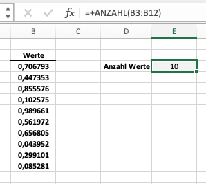

import pandas as pd
df = pd.read_csv('../../_data/Construction.csv')Einlesen und Aufbereiten
Einlesen und ersten Überblick verschaffen
Beginnen wir mit der Analyse, in dem wir die Daten zunächst einlesen und aufbereiten. Dazu verwenden wir read_csv() aus dem Paket pandas. Bei read_csv() handelt es sich um eine Funktion1, der verschiedene Parameter übergeben werden können.
1 genauer gesagt, um eine Methode eines Objektes.
Was sind Funktionen?
Eine Funktion ist ein Teil eines Programms, der eine bestimmte Aufgabe erfüllt. Wir können Funktionen einsetzen, um Teile des Codes wiederverwendbar zu machen bzw. um bereits geschriebenen Code von anderen wiederzuverwenden. Das Konstrukt ist sehr mächtig und wir werden sowohl bereits implementierte Funktionen nutzen (wie alle Funktionen, die pandas bereitstellt), als auch eigene Funktionen schreiben lernen.
Lassen Sie uns eine Analogie aus Excel nutzen. Stellen Sie sich vor, wir haben eine Spalte mit vielen Werten und wir wollen wissen, um wieviele Werte es sich handelt, d.h. wir wollen die Anzahl an Werten bestimmen. Wir könnten diese Information z.B. benötigen, um einen Durchschnitt zu berechnen.

Natürlich könnten wir die Anzahl an Werten selber und manuell zählen (es sind 10 Werte). Diese Lösung ist aber wenig sinnvoll, da wir so einen manuellen Schritt in unser “Programm” einbauen. Besser wäre es, wenn wir die Anzahl an Werten automatisiert bestimmen. Wir könnten uns über diese eigentlich triviale Aufgabe nun Gedanken machen. Jedoch müssen wir dies nicht, da es für diese spezielle Frage bereits eine Lösung in Excel gibt. Wir können die Funktion Anzahl() nutzen, die Excel bzw. Microsoft bereits für den Anwender zur Verfügung gestellt hat. Die Funktion berechnet, wie viele Zellen in einem Bereich Zahlen enthalten.

Ein Großteil der Funktionalität von Excel geht auf die breite Palette an bereits verfügbaren Funktionen zurück. Gleiches gilt für Python. Wir können uns die Arbeit von anderen Anwendern zu Nutze machen und die bereits implementierten Funktionen nutzen.
Eine Funktion in Python ist prinzipiell sehr ähnlich zu einer Funktion in Excel. Eine Funktion hat einen Namen, der sie eindeutig identifiziert. Außerdem hat sie Parameter, die sie benötigt, um ihre Aufgabe zu erfüllen. Die Funktion Anzahl() in Excel hat einen Parameter, der den Bereich angibt, in dem die Anzahl an Zahlen bestimmt werden soll. Die Funktion read_csv() in Python hat einen Parameter, der den Pfad zur Datei angibt, die eingelesen werden soll. Sowohl in Excel, als auch in Python gibt es Funktionen mit optionalen Parametern, die nicht zwingend angegeben werden müssen. Die Funktion Anzahl() in Excel hat einen optionalen Parameter, der angibt, ob auch leere Zellen gezählt werden sollen. Die Funktion read_csv() in Python hat eine Vielzahl von optionalen Parameter, die der Anwender beim Einlesen von Daten ggf. nutzen möchte oder muss (z.B. welche Spalten wir einlesen möchten, welches Datenformat wir verwenden, welches Dezimalkomma wir verwenden, etc.).
Der wichtigste (und einzige zwingend notwendige) Paramerter ist der Pfad zur Datei, die eingelesen werden soll. In unserem Fall ist der Pfad ../../_data/Construction.csv. Der Pfad ist relativ zum aktuellen Arbeitsverzeichnis, d.h. relativ zum Ort, in der sich das Notebook, mit dem wir arbeiten befindet.2. Die Funktion gibt ein sogenanntes DataFrame zurück, das wir in der Variable df speichern. Ein DataFrame ist eine Datenstruktur, die in der Regel Tabellen repräsentiert. In unserem Fall enthält das DataFrame die Daten aus der CSV-Datei. Prinzipiell können wir nahezu jedes gängige Format einlesen, das Pandas unterstützt. Eine vollständige Liste der unterstützten Formate finden Sie in der Dokumentation von Pandas.3
2 Sofern sich die Datei in einer Cloud befindet, kann auch der Link zur Datei angegeben werden, d.h. die Datei muss nicht lokal abgespeichert sein
3 siehe hier
Die Variable df enthält nun die Daten aus der CSV-Datei. Wenn das Einlesen der Daten erfolgreich war - d.h. wir keine Fehlermeldung erhalten haben -, können wir uns einen ersten Überblick verschaffen und uns den Inhalt der Variable df anschauen. Dazu verwenden wir die Funktion head().
df.head()| Project_ID | Name Projekt | projekt_Beginn | Plan Bau fertig | Fertig_IST | Kosten Plan | Ist_Kosten | Project_team | |
|---|---|---|---|---|---|---|---|---|
| 0 | HN-399443 | Straßenbau // Jennifer-Buchholz-Ring | 2014-09-01 | 2014-10-03 | 2014-10-02 | 219817.40 | 246192.34 | Team 3 |
| 1 | UD-626094 | Elektroarbeiten // Langernstraße | 2021-06-12 | 2021-08-16 | 2021-09-18 | 105683.14 | 144657.38 | Team 3 |
| 2 | IO-468103 | Spielplatz // Dussen vanweg | 2016-05-20 | 2016-06-29 | 2016-06-27 | 129851.26 | 136753.06 | Team 1 |
| 3 | OG-758899 | Stadtpark // Lübsstr. | 2014-11-11 | 2014-12-30 | 2015-01-28 | 181236.83 | 273996.91 | Team 2 |
| 4 | CZ-107835 | Elektroarbeiten // Försterweg | 2017-07-25 | 2017-10-08 | 2017-10-08 | 75205.92 | 77519.27 | Team 4 |
Die Funktion ist sehr hilfreich, um zu überprüfen, ob die Daten (zumindest scheinbar) korrekt eingelesen wurden. Außderm können wir so den Aufbau des Datensatzes erkennen.
head() und tail()
Die Funktion head() gibt die ersten Zeilen eines DataFrames aus. Mit der Funktion tail() können wir die letzten Zeilen ausgeben lassen. Ohne weitere Angabe von Parametern geben head() und tail() jeweils fünf Zeilen aus. Wir können beide Funktionen auch mit einem Argument aufrufen, um die Anzahl der Zeilen anzupassen. Beispiel: df.head(10) gibt die ersten zehn Zeilen aus. Der Aufruf von head() ist also äquivalent zum Aufruf head(5).
Nachdem wir uns die Daten angeschaut haben, sollten wir einen weiteren, tieferen Blick auf die Daten werfen. Mit der Funktion info() können wir uns die Spaltennamen und die Datentypen der Spalten ausgeben lassen. Dies ist ein guter Einstieg, um zu verstehen, welche Daten wir vor uns haben.
df.info()<class 'pandas.core.frame.DataFrame'>
RangeIndex: 10019 entries, 0 to 10018
Data columns (total 8 columns):
# Column Non-Null Count Dtype
--- ------ -------------- -----
0 Project_ID 10019 non-null object
1 Name Projekt 10019 non-null object
2 projekt_Beginn 10019 non-null object
3 Plan Bau fertig 10012 non-null object
4 Fertig_IST 10019 non-null object
5 Kosten Plan 10005 non-null float64
6 Ist_Kosten 10019 non-null float64
7 Project_team 10019 non-null object
dtypes: float64(2), object(6)
memory usage: 626.3+ KBDie Funktion info() gibt an, wieviele Zeilen (RangeIndex) und Spalten Data columns) der Datensatz hat und zusätzlich noch folgende Informationen je Spalte an:
#Position der Spalte (beginnend bei0)ColumnName der SpalteNon-Null CountAnzahl der nicht leeren Werte je SpalteDtypeDatentyp der Spalte
Wir können mit der Funkton also einige wichtige Dinge im Rahmen der Datenaufbereitung erkennen. In unserem Fall sind z.B. nicht alle Spalten mit Werten gefüllt. Wir werden im nächsten Abschnitt detaillierter darauf eingehen. Die Spalten haben außerdem einen von zwei Datentypen: object und float. Der Datentyp float repräsentiert Gleitkommazahlen. Der Datentyp object repräsentiert Zeichenketten (d.h. Python interpretiert die Daten als Text). Da wir beim Einlesen der Daten keine Angabe über die Datentypen gemacht haben, hat Pandas die Datentypen automatisch ermittelt. In der Regel ist dies auch eine guter erster Ansatz. Wir sollten jedoch in einem nächsten Schritt die Datentypen überprüfen und ggf. anpassen. Denn je besser der Datentyp zum Inhalt der Spalte passt, desto besser können wir mit den Daten arbeiten. Außerdem können wir bereits jetzt erkennen, dass die Spaltenbezeichungen inkonsistent und teilweise unglücklich gewählt sind. Wir werden im nächsten Abschnitt detaillierter darauf eingehen.
Position
0 in Python
Die erste Position in Python ist immer 0. Das ist ein Konzept, das wir uns merken sollten. Wir werden es in den kommenden Kapiteln immer wieder verwenden. Die erste Zeile eines DataFrames hat die Position 0. Die erste Spalte hat die Position 0.
Dies ist zunächst etwas verwirrend und ungewohnt. Jedoch ist Python hier sehr konsistent, so dass wir uns schnell daran gewöhnen werden. Grundsätzlich gilt: die erste Position in Python ist immer 0.
Aufbereitung der Daten
Beginnen wir mit der Aufbereitung der Daten. Natürlich gibt es nicht den richtigen Weg, um Daten aufzubereiten. Jeder Datensatz ist unterschiedlich und nicht alle Daten sind gleich. Dennoch gibt es typische Aufgaben, die wir bei der Aufbereitung von Daten immer wieder vorfinden. Wir werden uns im Folgenden einige dieser Aufgaben ansehen und die entsprechenden Lösungen diskutieren.
Variablennamen anpassen
Es ist nicht zwingend notwendig Variablen neu zu benennen. Im vorliegenden Datensatz hat jede Variable zumindest eine den Inhalt beschreibende Bezeichnung. Jedoch ist die Bezeichnung von Spalten oft nicht intuitiv, inkonsistent oder unklar. Daher ist es sinnvoll, die Spalten so zu bennen, dass wir im Rahmen der Analyse (i) schnell erkennen, was in der Spalte steht und (ii) die Auswahl der Spalten intuitiv ist. Die Umbenennung von Variablen hat dabei natürlich immer eine subjektive Komponente, da jeder andere Vorstellungen hat, wie die Spalten benannt sein sollten.
In unserem Datensatz sind die Spaltennamen jedoch insbesondere auch nicht einheitlich benannt. So beginnen einige Spalten mit einem Großbuchstaben, andere mit einem Kleinbuchstaben. Bei einigen Spalten ist der englische Begriff project, bei anderen der deutsche Begriff projekt verwendet. Einige Spalten beinhalten Leerzeichen, andere sind mit _ verbunden. Dies sind alles Dinge, die die weitere Analyse ein Stück weit erschweren, da wir Spalten nicht intuitiv auswählen können.
Lassen Sie uns die Spalten deshalb vereinheitlichen, in dem wir:
- alle Spalten in Kleinbuchstaben umwandeln
- alle Leerzeichen durch
_ersetzen - alle Begriffe
projectdurchprojektersetzen - wo sinnvoll kürzere Begriffe verwenden
- Begriffe wie
PlanundIsteinheitlich verwenden
Wir können die Spalten mit der Funktion rename() umbenennen. Die Funktion rename() erwartet als Parameter ein Dictionary, in dem wir die alten Spaltennamen als Schlüssel und die neuen Spaltennamen als Werte angeben.
df = df.rename(columns={'Project_ID': 'id', # Spalte "Projekt_ID" wird umbenannt in "id"
'Name Projekt': 'name',
'projekt_Beginn': 'beginn',
'Plan Bau fertig': 'ende_plan',
'Fertig_IST': 'ende_ist',
'Kosten Plan': 'kosten_plan',
'Ist_Kosten': 'kosten_ist',
'Project_team': 'team'})
df.head()| id | name | beginn | ende_plan | ende_ist | kosten_plan | kosten_ist | team | |
|---|---|---|---|---|---|---|---|---|
| 0 | HN-399443 | Straßenbau // Jennifer-Buchholz-Ring | 2014-09-01 | 2014-10-03 | 2014-10-02 | 219817.40 | 246192.34 | Team 3 |
| 1 | UD-626094 | Elektroarbeiten // Langernstraße | 2021-06-12 | 2021-08-16 | 2021-09-18 | 105683.14 | 144657.38 | Team 3 |
| 2 | IO-468103 | Spielplatz // Dussen vanweg | 2016-05-20 | 2016-06-29 | 2016-06-27 | 129851.26 | 136753.06 | Team 1 |
| 3 | OG-758899 | Stadtpark // Lübsstr. | 2014-11-11 | 2014-12-30 | 2015-01-28 | 181236.83 | 273996.91 | Team 2 |
| 4 | CZ-107835 | Elektroarbeiten // Försterweg | 2017-07-25 | 2017-10-08 | 2017-10-08 | 75205.92 | 77519.27 | Team 4 |
Datentypen anpassen
Ein wichtiger Schritt bei der Aufbereitung von Daten ist die Überprüfung der Datentypen. Wir haben bereits gesehen, dass unser Datensatz nach dem Einlesen zwei Datentypen enthält: object und float64. Lassen Sie uns deshalb überlegen, ob diese Datentypen geeignet für unsere Analyse sind. Denn: die Datentypen beeinflussen die Art und Weise, wie wir mit den Daten arbeiten können.
id: die Spalte beinhaltet Buchstaben, Zeichen und Zahlen (z.B. P-62602). Der Datentypobjectist also passend.name: die Spalte beinhaltet Text. Der Datentypobjectist also passend.beginn: die Spalte beinhaltet Datumswerte. Der Datentypobjectist nicht passend. Wir sollten den Datentyp in ein Datumsformat umwandeln.ende_plan: die Spalte beinhaltet Datumswerte. Der Datentypobjectist nicht passend. Wir sollten den Datentyp in ein Datumsformat umwandeln.ende_ist: die Spalte beinhaltet Datumswerte. Der Datentypobjectist nicht passend. Wir sollten den Datentyp in ein Datumsformat umwandeln.kosten_plan: die Spalte beinhaltet Zahlen. Der Datentypfloat64erscheint passend.kosten_ist: die Spalte beinhaltet Zahlen. Der Datentypfloat64erscheint passend.team: die Spalte beinhaltet Text. Der Datentypobjectist also passend.
Wir müssen also lediglich die Spalten mit Datumsinformationen in ein geeignetes Format umwandeln. Die Anpassung der Datumsformate können wir mit der Pandas-Funktion to_datetime() durchführen. Wir müssen dabei nur die Spalten angeben, die wir anpassen möchten. Die Funktion to_datetime() wandelt die Spalten dann in ein Datumsformate um. Wir überschreiben die Spalten einfach mit den neuen Werten.
df['beginn'] = pd.to_datetime(df['beginn'])
df['ende_plan'] = pd.to_datetime(df['ende_plan'])
df['ende_ist'] = pd.to_datetime(df['ende_ist'])
df.head()| id | name | beginn | ende_plan | ende_ist | kosten_plan | kosten_ist | team | |
|---|---|---|---|---|---|---|---|---|
| 0 | HN-399443 | Straßenbau // Jennifer-Buchholz-Ring | 2014-09-01 | 2014-10-03 | 2014-10-02 | 219817.40 | 246192.34 | Team 3 |
| 1 | UD-626094 | Elektroarbeiten // Langernstraße | 2021-06-12 | 2021-08-16 | 2021-09-18 | 105683.14 | 144657.38 | Team 3 |
| 2 | IO-468103 | Spielplatz // Dussen vanweg | 2016-05-20 | 2016-06-29 | 2016-06-27 | 129851.26 | 136753.06 | Team 1 |
| 3 | OG-758899 | Stadtpark // Lübsstr. | 2014-11-11 | 2014-12-30 | 2015-01-28 | 181236.83 | 273996.91 | Team 2 |
| 4 | CZ-107835 | Elektroarbeiten // Försterweg | 2017-07-25 | 2017-10-08 | 2017-10-08 | 75205.92 | 77519.27 | Team 4 |
Das Ergebnis ist für uns nicht ersichtlich. Wir können uns die Datentypen der einzelnen Spalten jedoch mit der Funktion dtypes anzeigen lassen und überprüfen, ob die Datentypen nun passend sind.
df.dtypesid object
name object
beginn datetime64[ns]
ende_plan datetime64[ns]
ende_ist datetime64[ns]
kosten_plan float64
kosten_ist float64
team object
dtype: object
Warum Datumsformate?
Die Konvertierung der Daten in ein Datumsformat ist für uns in unserem Falle nicht ersichtlich. Schauen wir uns die Daten an, sehen diese für uns aus wie vor der Konvertierung. Jedoch hat Pandas die Daten intern in ein Datumsformat umgewandelt, was den Vorteil hat, dass wir auf verschiedene Funktionen zurückgreifen können, die nur mit Daten vom Datentyp datetime funktionieren. So können wir z.B. mit der Funktion dt.weekday den Wochentag auslesen.
df['beginn'].dt.weekday0 0
1 5
2 4
3 1
4 1
..
10014 2
10015 6
10016 5
10017 3
10018 1
Name: beginn, Length: 10019, dtype: int64Die Umwandlung in ein Datumsformat ist also nicht nur für die Darstellung der Daten sinnvoll, sondern auch für die weitere Analyse - zumindest dann, wenn wir mit Datumsformaten arbeiten möchten.
Weitere Informationen zu den datetime-Funktionen finden Sie in der Dokumentation.
Daten bereinigen
Fehlende Werte
Wir haben bereits gesehen, dass nicht alle Spalten mit Werten gefüllt sind. Jedoch wissen wir nicht, wo sich diese fehlenden Werte befinden. Diese Information wird jedoch benötigt, um zu entscheiden, wie wir mit den fehlenden Werten umgehen. Wollen wir Beobachtungen mit fehlenden Werte entfernen oder wollen wir z.B. die fehlenden Werte mit einem anderen Wert ersetzen? Sind die fehlenden Werte für unsere Analyse relevant?
Mit der Funktion isna() können wir herausfinden, wo sich fehlende Werte befinden. Schauen wir uns die Funktion isna() zunächst einmal an.
df.isna()| id | name | beginn | ende_plan | ende_ist | kosten_plan | kosten_ist | team | |
|---|---|---|---|---|---|---|---|---|
| 0 | False | False | False | False | False | False | False | False |
| 1 | False | False | False | False | False | False | False | False |
| 2 | False | False | False | False | False | False | False | False |
| 3 | False | False | False | False | False | False | False | False |
| 4 | False | False | False | False | False | False | False | False |
| ... | ... | ... | ... | ... | ... | ... | ... | ... |
| 10014 | False | False | False | False | False | False | False | False |
| 10015 | False | False | False | False | False | False | False | False |
| 10016 | False | False | False | False | False | False | False | False |
| 10017 | False | False | False | False | False | False | False | False |
| 10018 | False | False | False | False | False | False | False | False |
10019 rows × 8 columns
Das Ergebnis der Funktion isna() ist ein DataFrame, der für jede Zelle einen Boolean-Wert zurückgibt. True bedeutet, dass die Zelle einen fehlenden Wert enthält, False bedeutet, dass die Zelle einen Wert enthält. In unserem Fall ist der Datensatz jedoch zu groß, als dass wir die Ausgabe der Funktion isna() komplett betrachten können. Idealerweise möchten wir nur die Zeilen sehen, die fehlende Werte enthalten.
Dies können wir mit der Funktion any() erreichen. Die Funktion any() gibt für jede Spalte oder Zeile einen Boolean-Wert zurück. True bedeutet, dass dort mindestens ein fehlender Wert enthalten ist. Mit dem Parameter axis können wir angeben, ob wir die Funktion any() für jede Spalte oder für jede Zeile ausführen möchten. axis=1 bedeutet, dass wir die Funktion any() für jede Zeile ausführen möchten.
df.isna().any(axis=1)0 False
1 False
2 False
3 False
4 False
...
10014 False
10015 False
10016 False
10017 False
10018 False
Length: 10019, dtype: boolWir können dieses Ergebnis nun zum Filtern der Zeilen verwenden. Wir erstellen einen Boolean-Index, der nur die Zeilen enthält, die fehlende Werte enthalten4. Diesen Index können wir dann verwenden, um nur die Zeilen auszuwählen, die fehlende Werte enthalten.
4 Hinweis: dieser wird oft als mask bezeichnet. Da es sich aber um eine einfache Variable handelt, können wir diese theoretisch benennen, wie wir möchten.
mask = df.isna().any(axis=1)
df[mask]| id | name | beginn | ende_plan | ende_ist | kosten_plan | kosten_ist | team | |
|---|---|---|---|---|---|---|---|---|
| 103 | TH-593312 | Elektroarbeiten // Börnerplatz | 2018-05-07 | 2018-07-11 | 2018-07-17 | NaN | 69375.23 | Team 3 |
| 740 | NL-673150 | Baumbestand // Loosplatz | 2016-12-30 | NaT | 2016-12-31 | 16349.93 | 17892.16 | Team 3 |
| 896 | LM-748355 | Baumbestand // Martha-Bohlander-Ring | 2019-10-17 | 2019-10-22 | 2019-10-24 | NaN | 40637.75 | Team 4 |
| 996 | AY-257302 | Elektroarbeiten // Eimerstr. | 2014-02-03 | 2014-02-28 | 2014-03-01 | NaN | 112867.21 | Team 2 |
| 1059 | RR-446242 | Elektroarbeiten // Florentine-Kambs-Allee | 2013-06-16 | 2013-07-24 | 2013-07-23 | NaN | 164730.94 | Team 1 |
| 1272 | RG-867589 | Stadtpark // Gottlieb-Plath-Platz | 2015-03-05 | NaT | 2015-04-14 | 199994.22 | 233881.99 | Team 4 |
| 1357 | ZL-002818 | Elektroarbeiten // Margrafweg | 2015-10-13 | NaT | 2016-01-24 | 94817.15 | 132951.83 | Team 3 |
| 1406 | XJ-212266 | Elektroarbeiten // Xenia-Hermighausen-Weg | 2020-12-17 | 2021-01-30 | 2021-02-03 | NaN | 75133.80 | Team 4 |
| 1887 | HT-062324 | Ubahn // Norma-Kade-Platz | 2013-08-26 | 2013-09-30 | 2013-09-11 | NaN | -84308.51 | Team 4 |
| 2477 | TQ-532646 | Landschaftsbau // Ester-Eberhardt-Platz | 2015-11-07 | 2015-11-08 | 2015-11-12 | NaN | 75117.33 | Team 2 |
| 2916 | CN-702227 | Spielplatz // Werneckeweg | 2019-08-12 | 2019-09-06 | 2019-09-26 | NaN | 70094.61 | Team 2 |
| 3678 | RY-972392 | Elektroarbeiten // Textorallee | 2014-04-05 | 2014-06-24 | 2014-06-14 | NaN | 119277.88 | Team 1 |
| 4724 | HV-603533 | Landschaftsbau // Grein Grothring | 2018-03-12 | 2018-03-25 | 2018-03-28 | NaN | 187268.32 | Team 4 |
| 5652 | ZL-598081 | Baumbestand // Tintzmannallee | 2014-12-04 | 2014-12-04 | 2014-12-04 | NaN | 27231.15 | Team 4 |
| 5948 | HZ-310515 | Spielplatz // Mansplatz | 2021-11-21 | 2022-01-30 | 2022-03-08 | NaN | 236494.73 | Team 2 |
| 6034 | VE-356952 | Landschaftsbau // Samira-Trupp-Straße | 2013-08-27 | NaT | 2013-09-17 | -31296.91 | -36533.15 | Team 2 |
| 6398 | CG-482764 | Landschaftsbau // Süßebierstraße | 2021-08-31 | NaT | 2021-09-12 | 116367.77 | 105993.50 | Team 1 |
| 6672 | HK-793800 | Baumbestand // Bolanderstr. | 2014-05-26 | NaT | 2014-06-07 | 60701.91 | 68018.53 | Team 3 |
| 7894 | RV-503877 | Elektroarbeiten // Anselm-Römer-Allee | 2013-06-20 | 2013-10-11 | 2013-10-12 | NaN | 80977.58 | Team 2 |
| 8853 | VY-133979 | Baumbestand // Ansgar-Lindau-Weg | 2017-02-17 | NaT | 2017-03-12 | 44071.21 | 49196.77 | Team 1 |
| 9759 | LR-884749 | Stadtpark // Steven-Döhn-Weg | 2021-11-10 | 2021-12-17 | 2021-12-07 | NaN | 172659.20 | Team 3 |
Das Ergebnis ist ein Ausschnitt unseres Datensatzes, der nur die Zeilen enthält, die fehlende Werte enthalten. Da wir keine weiteren Informationen zu den fehlenden Daten haben und auch keinen systematischen Fehler entdecken können, der zu den fehlenden Daten führt, werden wir die fehlenden Werte einfach entfernen. Dies können wir mit der Funktion dropna() erreichen.
df = df.dropna()
df.info()<class 'pandas.core.frame.DataFrame'>
Int64Index: 9998 entries, 0 to 10018
Data columns (total 8 columns):
# Column Non-Null Count Dtype
--- ------ -------------- -----
0 id 9998 non-null object
1 name 9998 non-null object
2 beginn 9998 non-null datetime64[ns]
3 ende_plan 9998 non-null datetime64[ns]
4 ende_ist 9998 non-null datetime64[ns]
5 kosten_plan 9998 non-null float64
6 kosten_ist 9998 non-null float64
7 team 9998 non-null object
dtypes: datetime64[ns](3), float64(2), object(3)
memory usage: 703.0+ KBDer angepasste Datensatz enthält nun keine fehlenden Werte mehr, ist jedoch auch um einige Zeilen kleiner geworden. Gemessen an der Größe des Gesamtdatensatzes scheint dies jedoch vernachlässigbar zu sein.
Duplikate
Ähnlich wie bei den fehlenden Werten können wir mit der Funktion duplicated() herausfinden, ob es Duplikate in unserem Datensatz gibt. Mit Duplikaten meinen wir hier, dass es Zeilen gibt, die im Datensatz mehrfach vorkommen. Das Vorgehen zur Identifikation von Duplikaten ist ähnlich wie bei den fehlenden Werten.
Lassen Sie uns nun analysieren, ob es überhaupt Duplikate in unserem Datensatz gibt uns dafür alle Spalten berücksichtigen. Mit der Funktion sum() können wir die Anzahl der Duplikate ermitteln.
df.duplicated().sum()19Da es Duplikate gibt, können sollten wir uns diese nun genauer anschauen. Dafür nutzen wir zusätzlich zur Funktion duplicated() noch die Funktion sort_values(). Diese Funktion sortiert die Werte in einem DataFrame. Wir sortieren hier die Werte nach der Spalte id und geben dann die ersten 10 Zeilen aus.
mask = df.duplicated(keep=False)
df[mask].sort_values('id').head(10)| id | name | beginn | ende_plan | ende_ist | kosten_plan | kosten_ist | team | |
|---|---|---|---|---|---|---|---|---|
| 1438 | AS-665106 | Landschaftsbau // Junckengasse | 2013-03-30 | 2013-04-20 | 2013-04-20 | 112341.63 | 171362.50 | Team 4 |
| 5617 | AS-665106 | Landschaftsbau // Junckengasse | 2013-03-30 | 2013-04-20 | 2013-04-20 | 112341.63 | 171362.50 | Team 4 |
| 8235 | BD-570752 | Landschaftsbau // Seifertstr. | 2021-10-27 | 2021-11-12 | 2021-11-14 | 83103.02 | 125081.94 | Team 4 |
| 2591 | BD-570752 | Landschaftsbau // Seifertstr. | 2021-10-27 | 2021-11-12 | 2021-11-14 | 83103.02 | 125081.94 | Team 4 |
| 1337 | DH-600607 | Straßenbau // Tröstplatz | 2015-01-06 | 2015-01-25 | 2015-01-26 | 189536.10 | 210407.91 | Team 1 |
| 6452 | DH-600607 | Straßenbau // Tröstplatz | 2015-01-06 | 2015-01-25 | 2015-01-26 | 189536.10 | 210407.91 | Team 1 |
| 8931 | FN-033852 | Elektroarbeiten // Gerhard-Sontag-Allee | 2015-08-17 | 2015-09-17 | 2015-09-19 | 69545.97 | 92323.52 | Team 2 |
| 5015 | FN-033852 | Elektroarbeiten // Gerhard-Sontag-Allee | 2015-08-17 | 2015-09-17 | 2015-09-19 | 69545.97 | 92323.52 | Team 2 |
| 1586 | GM-576339 | Ubahn // Dörrplatz | 2019-05-06 | 2019-09-08 | 2019-11-04 | 398069.61 | 427038.79 | Team 3 |
| 2200 | GM-576339 | Ubahn // Dörrplatz | 2019-05-06 | 2019-09-08 | 2019-11-04 | 398069.61 | 427038.79 | Team 3 |
In unserem Falle erscheint es sinnvoll, die Duplikate zu entfernen. Wir können dies mit der Funktion drop_duplicates() tun. Diese Funktion entfernt standardmäßig die zweite Zeile einer doppelten Beobachtung. Wir können dies jedoch ebenfalls mit dem Parameter keep ändern (d.h. alle Duplikate entfernen oder nur die erste oder letzte Zeile).
df = df.drop_duplicates()Wir können nun nochmals überprüfen, ob es noch Duplikate gibt und stellen fest, dass unsere Daten nun auf Dopplungen bereinigt sind.
df.duplicated().any()FalseFalsche Werte
Ein wichtiger Schritt bei der Datenbereinigung ist die Überprüfung der Daten auf (offensichtlich) falsche Werte. Nicht immer ist bereits bei der Aufbereitung der Daten erkennbar, ob ein Wert plausibel ist oder nicht. Häufig werden falsche Werte erst bei der Analyse der Daten sichtbar. Jedoch können und sollten einige Plausibilitätsprüfungen bereits bei der Aufbereitung der Daten durchgeführt werden.
Im vorliegenden Datensatz können wir z.B. folgende Plausibilitätsprüfungen durchführen:
Ist der Wert der Spalte
ideindeutig?Sind die Werte für Kosten (
kosten_planundkosten_ist) plaubibel, d.h. sind die Kosten positiv (bzw. haben alle das gleiche Vorzeichen)?Sind die Werte für die Datumsspalten (
beginn,ende_planundende_ist) plausibel, d.h. (i) liegen die Werte in der Vergangenheit und (ii) ist das Enddatum nach dem Startdatum?
Plausibilitätsprüfung 1: Ist der Wert der Spalte id eindeutig?
Eine id sollte immer eindeutig sein. Im vorliegenden Fall sollte die Anzahl an eindeutigen Werten der Anzahl an Zeilen entsprechen. Ist dies der Fall, so ist die id eindeutig, falls nicht, wurde die id mehrfach vergeben. Nicht-eindeutige ids müssen nicht problematisch sein, jedoch können dann Fehler bei z.B. der Zusammenführung von Datensätzen oder bei der Aggregation von Daten auftreten. Wir können mit der Funktion unique() überprüfen, ob die id eindeutig ist.
unique_ids = df['id'].unique()Wir können nun überprüfen, ob die Anzahl der eindeutigen Werte der Anzahl der Zeilen entspricht.
len(unique_ids) == len(df)TrueDa der Wert True zurückgegeben wird, ist die id eindeutig und wir können uns sicher sein, dass keine Projekt-ID mehrfach vergeben wurde.
Plausibilitätsprüfung 2: Sind die Werte für Kosten (kosten_plan und kosten_ist) plaubibel, d.h. sind die Kosten positiv (bzw. haben alle das gleiche Vorzeichen)?
Lassen Sie uns zunächst die Kostenwerte für die Spalte kosten_plan betrachten und überprüfen, ob es Werte gibt, die negativ sind. Dazu müssen wir überprüfen, ob es Werte gibt, die kleiner als 0 sind. Die können wir mit dem Operator < überprüfen.
df['kosten_plan'] < 00 False
1 False
2 False
3 False
4 False
...
10014 False
10015 False
10016 False
10017 False
10018 False
Name: kosten_plan, Length: 9979, dtype: boolWir erhalten eine Series mit True und False Werten. True bedeutet, dass der Wert kleiner als 0 ist, False bedeutet, dass der Wert größer oder gleich 0 ist. Wir können nun überprüfen, ob es überhaupt Werte gibt, die kleiner als 0 sind, in dem wir z.B. die bereits bekannte Funktion any() nutzen.
(df['kosten_plan'] < 0).any()TrueDa der Wert True zurückgegeben wird, gibt es Werte, die kleiner als 0 sind. Lassen Sie uns diese Werte nun betrachten. Das vorgehen ist ähnlich wie bei der Überprüfung auf Duplikate. Wir können die Werte mit dem Operator < filtern und anschließend die Zeilen mit den negativen Kostenwerten ausgeben. Wir nutzen hier eine komprimierte Schreibweise ohne die Zwischenspeicherung in einer Variablen mask.
# Variante 1
mask = df['kosten_plan'] < 0
df[mask]
# Variante 2
df[df['kosten_plan'] < 0]Die Schreibweise ist ohne die Zwischenspeicherung in einer Variablen mask etwas kompakter und auch in der Praxis häufiger anzutreffen. Wir stellen an dieser Stelle noch eine weitere - und aus unserer Sicht elegantere - Möglichkeit vor, um die Zeilen mit negativen Kostenwerten auszugeben.
Wir können die Funktion query nutzen, um unseren Datensatz nach Bedingungen zu filtern. Die Bedingung wird als String übergeben. In unserem Fall wollen wir alle Zeilen ausgeben, die einen negativen Kostenwert haben. Die Bedingung lautet also kosten_plan < 0.
# Datensatz nach Bedingung filtern
df.query('kosten_plan < 0')| id | name | beginn | ende_plan | ende_ist | kosten_plan | kosten_ist | team | |
|---|---|---|---|---|---|---|---|---|
| 149 | ZU-631931 | Ubahn // Mohammed-Lehmann-Straße | 2018-11-14 | 2019-04-02 | 2019-08-27 | -97953.64 | -138873.05 | Team 1 |
| 187 | UO-403669 | Straßenbau // Cichoriusallee | 2013-06-15 | 2013-09-03 | 2013-09-03 | -6600.91 | -11154.49 | Team 2 |
| 203 | TA-448220 | Ubahn // Miesgasse | 2018-10-27 | 2019-03-14 | 2019-06-01 | -10881.99 | -12512.99 | Team 1 |
| 228 | DD-996695 | Landschaftsbau // Hertrampfstraße | 2019-12-19 | 2019-12-20 | 2020-01-22 | -12584.56 | -16566.35 | Team 2 |
| 290 | XX-607121 | Baumbestand // Sandro-Schönland-Weg | 2016-10-08 | 2016-10-21 | 2016-10-23 | -28178.22 | -30112.10 | Team 4 |
| ... | ... | ... | ... | ... | ... | ... | ... | ... |
| 9850 | MP-329043 | Elektroarbeiten // Anica-Hövel-Ring | 2014-08-01 | 2014-10-04 | 2014-10-01 | -18000.60 | -20083.99 | Team 1 |
| 9874 | FY-695742 | Baumbestand // Trubinplatz | 2020-11-05 | 2020-11-20 | 2020-11-22 | -2681.19 | -3792.85 | Team 2 |
| 9917 | BQ-152614 | Baumbestand // Sylwia-Flantz-Gasse | 2018-09-12 | 2018-09-15 | 2018-09-17 | -40725.60 | -46026.01 | Team 1 |
| 9921 | AG-880105 | Landschaftsbau // Natalja-Sölzer-Platz | 2013-11-03 | 2013-11-23 | 2013-11-25 | -13156.08 | -13550.75 | Team 4 |
| 9964 | UT-072682 | Stadtpark // Roswita-Ebert-Weg | 2014-10-18 | 2014-11-25 | 2014-11-24 | -27341.83 | -45652.98 | Team 2 |
213 rows × 8 columns
Eine nicht unerhebliche Anzahl an Projekten hat Kosten mit negativen Werten. Auch wird deutlich, dass die Kostenwerte für die Spalte kosten_ist dann ebenfalls negativ sind. Dies kann verschiedene Ursachen haben, z.B. dass die Kosten beim erfassen der Daten falsch eingegeben wurden. In Realität würde man hier mit dem Kunden oder der Projektleitung sprechen und versuchen die Daten zu korrigieren. In unserem Fall werden wir die Daten eliminieren, um keinen Fehler in der weiteren Analyse zu erzeugen.
Der einfachste Weg, die Zeilen mit negativen Vorzeichen zu eliminieren, ist es den Datensatz mit query zu filtern. Wir können die Bedingung kosten_plan >= 0 nutzen, um alle Zeilen auszugeben, die einen positiven Kostenwert haben.
df = df.query('kosten_plan >= 0')Wir könnten nun die gleiche Überprüfung für die Spalte kosten_ist durchführen. Stattdessen filtern wir aber alle Zeilen, die einen negativen Kostenwert haben, aus dem Datensatz heraus.
df = df.query('kosten_ist >= 0')Wir hätten die beiden letzten Schritte auch in einem Schritt durchführen können, indem wir die Bedingungen mit einem and verknüpft hätten.
df = df.query('kosten_plan >= 0 and kosten_ist >= 0')Plausibilitätsprüfung 3: Sind die Werte für die Datumsspalten (beginn, ende_plan und ende_ist) plausibel?
Bei der nun folgenden Überprüfung kommt uns zugute, dass wir die Spalten bereits in den Datentyp datetime konvertiert haben. Wir können nun die Werte für die Spalten beginn, ende_plan und ende_ist miteinander vergleichen.
Wir können zwei Überprüfungen durchführen:
Sind alle Projekte bereits beendet?
Liegt das Datum für
ende_plannach dem Datum fürbeginn?
Lassen Sie uns mit der ersten Überprüfung beginnen. Wir können die Funktion max() nutzen, um das jüngste Datum in der Spalte ende_ist zu ermitteln. Dieses Datum sollte in der Vergangenheit liegen.
df['ende_ist'].max()Timestamp('2023-03-09 00:00:00')Das letzte Projekt wurde in der Vergangeheit beendet, d.h. wir können sicher sein, dass alle Projekte bereits beendet sind (und somit annehmen, dass auch alle Kosten bereits berücksichtigt wurden). Eine weitere Plausibiltätsprüfung ist, ob das Datum für ende_ist nach dem Datum für beginn liegt. Falls nicht, läge ein offensichtlicher Datenfehler vor. Wir können dies mit dem Operator < überprüfen. Da wir die Spalten bereits in den Datentyp datetime konvertiert haben, liegt diese Funktionalität bereits vor; mit dem Datentyp object wäre dies nicht möglich gewesen. Wir können also unseren Datensatz filtern für Zeilen, bei denen gilt, dass ende_ist kleiner oder gleich beginn ist.
df.query('ende_ist <= beginn')| id | name | beginn | ende_plan | ende_ist | kosten_plan | kosten_ist | team | |
|---|---|---|---|---|---|---|---|---|
| 1251 | TG-362669 | Baumbestand // Cornelia-Schönland-Gasse | 2017-08-16 | 2017-08-16 | 2017-08-16 | 55507.48 | 69877.32 | Team 2 |
| 1584 | CF-360814 | Baumbestand // Adlerallee | 2014-10-18 | 2014-10-19 | 2014-10-18 | 80258.30 | 80779.37 | Team 4 |
| 2456 | JV-632251 | Baumbestand // Gabriel-Gude-Platz | 2014-11-03 | 2014-11-03 | 2014-11-03 | 31973.47 | 35215.93 | Team 3 |
| 2764 | WS-799566 | Stadtpark // Hesseplatz | 2014-04-21 | 2014-04-22 | 2014-04-21 | 175422.45 | 270521.71 | Team 2 |
| 3319 | QC-047279 | Stadtpark // Heiko-Pohl-Straße | 2020-06-24 | 2020-07-12 | 2020-06-24 | 92345.10 | 117155.99 | Team 3 |
| 3786 | VL-461771 | Landschaftsbau // Löfflerweg | 2017-07-06 | 2017-07-07 | 2017-07-06 | 159544.85 | 160881.59 | Team 1 |
| 4180 | LN-394370 | Ubahn // Miodrag-Harloff-Gasse | 2021-03-28 | 2021-05-02 | 2021-03-28 | 196492.47 | 315066.68 | Team 4 |
| 4192 | TB-549699 | Landschaftsbau // Ruppertweg | 2020-12-20 | 2020-12-21 | 2020-12-20 | 112881.59 | 176922.78 | Team 4 |
| 4426 | GD-117672 | Baumbestand // Editha-Roskoth-Allee | 2021-11-30 | 2021-11-30 | 2021-11-30 | 18952.82 | 20637.53 | Team 3 |
| 4732 | JS-419276 | Baumbestand // Noackstraße | 2013-07-03 | 2013-07-03 | 2013-07-03 | 95666.74 | 102161.85 | Team 4 |
| 5032 | LN-496169 | Elektroarbeiten // Kerstin-Kreusel-Gasse | 2019-09-13 | 2019-09-13 | 2019-09-13 | 216360.70 | 376378.86 | Team 2 |
| 5154 | XN-964801 | Baumbestand // Marc-Tlustek-Gasse | 2014-06-01 | 2014-06-03 | 2014-06-01 | 32613.11 | 38129.52 | Team 1 |
| 6035 | NG-005840 | Stadtpark // Kaulgasse | 2018-09-12 | 2018-09-15 | 2018-09-12 | 98942.58 | 106455.00 | Team 4 |
| 6046 | VB-997519 | Baumbestand // Isabella-Caspar-Allee | 2021-09-04 | 2021-09-04 | 2021-09-04 | 47069.77 | 49991.91 | Team 4 |
| 6139 | KM-743270 | Landschaftsbau // Hentschelgasse | 2015-05-20 | 2015-05-20 | 2015-05-20 | 61717.02 | 69451.95 | Team 2 |
| 6656 | FH-375317 | Baumbestand // Wilmsplatz | 2013-11-02 | 2013-11-02 | 2013-11-02 | 13688.48 | 14638.31 | Team 4 |
| 7118 | OH-717871 | Landschaftsbau // Horst-Günter-Tröst-Platz | 2014-07-13 | 2014-07-13 | 2014-07-13 | 141555.26 | 146860.57 | Team 1 |
| 7511 | VH-400747 | Stadtpark // Zahngasse | 2018-01-05 | 2018-01-18 | 2018-01-05 | 136581.01 | 164558.76 | Team 3 |
| 8262 | BB-659680 | Baumbestand // Schottinring | 2020-07-29 | 2020-07-29 | 2020-07-29 | 50229.52 | 65361.78 | Team 2 |
| 9047 | XI-154940 | Baumbestand // Inken-Staude-Weg | 2017-07-25 | 2017-07-26 | 2017-07-25 | 88698.82 | 96346.85 | Team 1 |
| 9071 | JC-187276 | Landschaftsbau // Röhrdanzstraße | 2017-08-25 | 2017-08-25 | 2017-08-25 | 60098.23 | 58506.66 | Team 1 |
| 10015 | YH-661176 | Baumbestand // Nohlmansweg | 2017-02-12 | 2017-02-12 | 2017-02-12 | 50864.60 | 70050.16 | Team 4 |
Schauen wir uns die Projekte näher an, so stellt man fest, dass es sich ausschließlich um Projekte handelt, die am gleichen Tag begonnen und beendet wurden. Dies ist prinzipiell nicht ausgeschlossen, jedoch erscheint dies - zumindest für einige Projekte - sehr unwahrscheinlich, da gleichzeitig hohe Kosten veranschlagt wurden, was auf eine längere Projektlaufzeit schließen lässt. Wir müssen jetzt entscheiden, ob wir diese Projekte eliminieren wollen oder nicht. Da wir uns in diesem Fall nicht sicher sind, ob die Daten korrekt sind, werden wir die Projekte nicht eliminieren. Stattdessen fügen wir eine neue Spalte hinzu, die die Dauer des Projektes in Tagen angibt. Wir können dann im Rahmen unserer Analyse die Projekte mit einer Projektdauer von 0 Tagen herausfiltern und analysieren, ob dies unsere Ergebnisse beeinflusst.
df['dauer'] = df['ende_ist'] - df['beginn']Übersicht genutzter Methoden
Es wurden folgende Funktionen und Methoden genutzt:
read_csv(): Einlesen der Datenhead(): Anzeigen der ersten Zeilentail(): Anzeigen der letzten Zeileninfo(): Anzeigen der Datentypen und der Anzahl der nicht fehlenden Werterename(): Umbenennen der Spaltento_datetime(): Konvertieren der Spalten in den Datentypdatetimeisna(): Überprüfen, ob Werte fehlenany(): Überprüfen, ob Spalte oder ZeileFalseenthältdropna(): Eliminieren von Zeilen mit fehlenden Wertenduplicated(): Überprüfen, ob es Duplikate gibtdrop_duplicates(): Eliminieren von Duplikatenunique(): Ermitteln der einzigartigen Wertequery(): Filtern von Zeilen nach Bedingungmax(): Ermitteln des höchsten Wertes